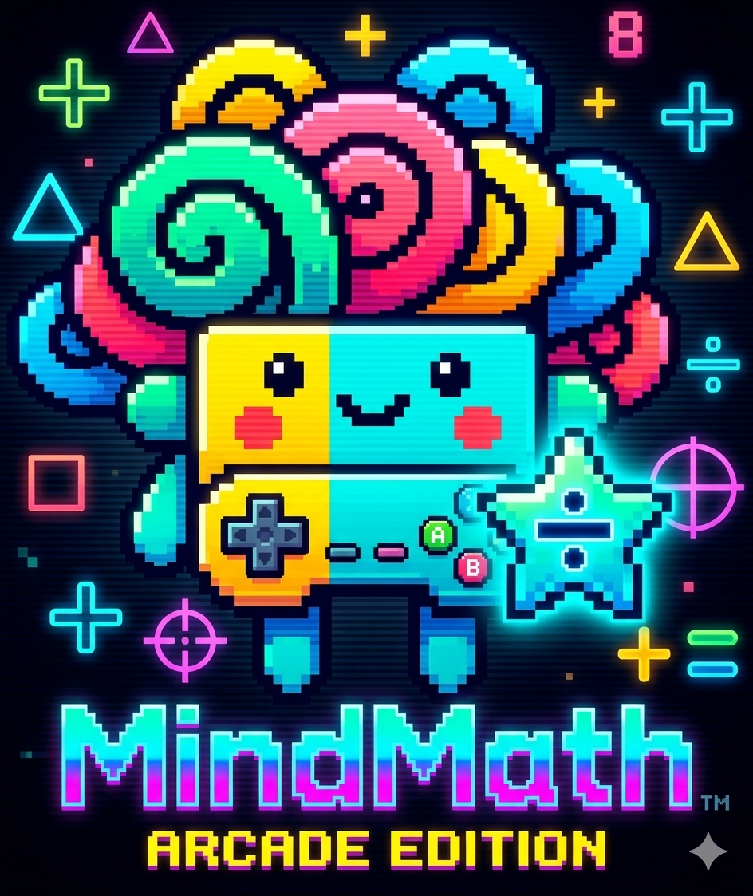

⚡ TECNOMATHCALIFICACIONES DE LA COMUNIDAD
CALIFICA TUS JUEGOS FAVORITOS
Elige de 1 a 5 estrellas. Cada estudiante puede calificar una vez cada juego y participar en todos los demás.
CONECTANDO…
CATÁLOGO

⚡ TECNOMATHElige de 1 a 5 estrellas. Cada estudiante puede calificar una vez cada juego y participar en todos los demás.